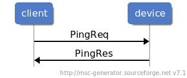
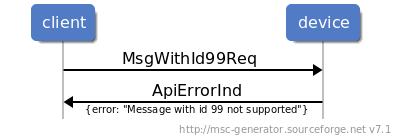

General API
A device supporting MDIF is controlled via messages. All messages are specified using Protocol Buffer (Protobuf) messages. Protobuf messages are defined in logical components which expose a certain set of functions.
Message exchange with a device generally follows one of two patterns - request/response or stream.
Request/Response
A message exchange following the request/response pattern is initiated by the client by sending a request and the device will respond with a response. Request messages have a ‘Req’ suffix and response messages have a ‘Res’ suffix.
The message sequence chart below shows an example of a request/response message exchange with the ‘ping’ functionality from the Core API component.

Stream
Message exchanges following the stream pattern are initiated by the device, and they can be sent at any time. The messages are sent as indications and have an ‘Ind’ suffix. Messages of this kind are used to notify the client of events like device state, process state (e.g. FWU), etc.
The message sequence chart below shows an example of a stream message exchange with part of the ‘fwu’ functionality from the FWU API component.

Api Error
If an error occurs during a request/response message exchange, the device will respond with an ApiErrorInd message. The message contains a string with a description of the error.
